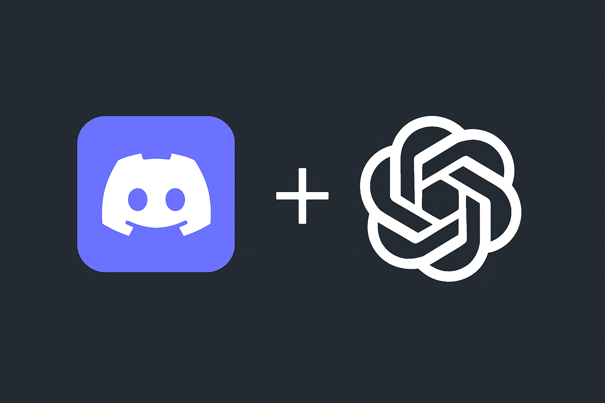

Building a Discord Health Bot on AWS in Under 3 Hours
How I Combined ChatGPT with My Expertise

It started as a simple idea: I wanted a Discord bot that could help me and my friends track health goals. We wanted something interactive — a little competition to see who could hit their workout and nutrition targets.
Instead of spreadsheets or manual tracking, why not automate it? That’s when I decided to build a Discord bot.
Fast Prototyping with ChatGPT
I used ChatGPT to quickly scaffold the bot. Within minutes, I had a working Python structure with basic commands: logging workouts, tracking nutrition, and generating leaderboards.
@bot.tree.command(name="set_nutrition_goal", description="Set your daily calorie goal and target days per week")
async def set_nutrition_goal(interaction: discord.Interaction, calories: int, days_per_week: int):
data = load_data()
user_id = str(interaction.user.id)
data.setdefault(user_id, {
"workout_goal": 0, "workouts_done": 0,
"nutrition_goal": 0, "nutrition_done": 0,
"nutrition_days_goal": 0, "nutrition_days_met": 0,
"streak": 0, "best_streak": 0,
"multi_streak": 0, "best_multi_streak": 0
})
data[user_id]["nutrition_goal"] = calories
data[user_id]["nutrition_days_goal"] = days_per_week
save_data(data)
await interaction.response.send_message(
f"🥗 Nutrition goal set to {calories} calories/day for {days_per_week} days per week."
)
While ChatGPT wrote the initial code, my experience in Python allowed me to:
- Catch potential logic errors.
- Ensure consistent architecture.
- Structure the code so it could scale with multiple commands and data types.
The bot was running in a local environment within 30 minutes, but I wanted it always online, so I turned to AWS.
Hosting on AWS EC2
I used Terraform to provision everything in a repeatable, version-controlled way. There were a few potential solutions, but I wanted to change my current bot architecture as little as possible, so I went with these services:
- EC2 Instance to run the bot as a service.
- S3 Bucket for storing the bot’s code.
- IAM Roles for secure access to S3 and SSM.
- SSM (Session Manager) to manage EC2 without exposing SSH.
Because I understand AWS, I was able to:
- Make sure best practices were followed. Like granting least-privilege permissions for S3 and SSM.
- Ensure the solution choices being made were the simplest and most efficient. E.g. Server-driven vs Serverless
- Troubleshoot issues as they occurred.
Persistent Data with JSON
One key design choice was storing all user progress in a JSON file:
def load_data():
try:
with open(DATA_FILE, "r") as f:
return json.load(f)
except FileNotFoundError:
return {}
def save_data(data):
with open(DATA_FILE, "w") as f:
json.dump(data, f, indent=4)
This allowed for:
- Easy serialization of Python data structures.
- Full persistent storage without a database.
- Simple versioning and recovery.
But I also knew that storing the JSON only on EC2 was risky. What if the instance failed?
Making Data Resilient: EC2 ↔ S3 Sync
To make the bot resilient, I set up a workflow where:
- Local changes to the bot are uploaded to S3.
- EC2 instances pull updated code automatically via SSM.
- The JSON file on EC2 is synced back to S3 periodically. This was done using a cron job.
This ensures:
- The latest bot code and data are always backed up.
- Multiple instances could potentially run the bot with consistent state.
- Disaster recovery is straightforward — just launch a new EC2 and sync from S3.
Example script for syncing code to S3, then restarting the bot:
#!/bin/bash
BUCKET_NAME=$(terraform output -raw s3_bucket_name)
# Upload updated code
aws s3 cp ./bot/health_bot.py s3://$BUCKET_NAME/health_bot.py
# Use SSM to pull updated code from S3 and restart bot on EC2
INSTANCE_ID=$(aws ec2 describe-instances \
--filters "Name=tag:Name,Values=DiscordBotInstance" \
--query "Reservations[0].Instances[0].InstanceId" --output text)
aws ssm send-command \
--targets "Key=InstanceIds,Values=$INSTANCE_ID" \
--document-name "AWS-RunShellScript" \
--comment "Update Discord bot code" \
--parameters 'commands=["aws s3 cp s3://'$BUCKET_NAME'/health_bot.py /home/ubuntu/bot/health_bot.py", "systemctl restart discord-bot.service"]'
Automating Updates
At this point, everything was automated!
- I use a shell script and AWS SSM SendCommand to upload code changes and tell EC2 to fetch the latest code then restart the bot.
- Terraform manages all infrastructure so I can recreate instances reliably.
- Persistent JSON data is backed up to S3, from EC2 every minute by utilizing a cron job.
Example: Daily Reset Task
@tasks.loop(time=datetime.time(0, 0, tzinfo=PACIFIC))
async def daily_reset():
data = load_data()
embed = discord.Embed(
title="🥗 Daily Nutrition Reset",
description="Your daily nutrition logs have been reset!",
color=discord.Color.orange(),
timestamp=datetime.datetime.now(PACIFIC)
)
for uid, stats in data.items():
user = await bot.fetch_user(int(uid))
# Check if today's goal is met
if stats["nutrition_goal"] > 0 and stats["nutrition_done"] <= stats["nutrition_goal"]:
stats["nutrition_days_met"] += 1
workout_summary = f"Workouts this week: {stats['workouts_done']}/{stats['workout_goal']}" if stats["workout_goal"] > 0 else "No workout goal set"
nutrition_summary = f"Calories today: {stats['nutrition_done']}/{stats['nutrition_goal']}\n" \
f"Days met this week: {stats['nutrition_days_met']}/{stats['nutrition_days_goal']}" if stats["nutrition_goal"] > 0 else "No nutrition goal set"
embed.add_field(
name=user.display_name,
value=f"{workout_summary}\n{nutrition_summary}",
inline=False
)
stats["nutrition_done"] = 0
save_data(data)
channel = bot.get_channel(SUMMARY_CHANNEL_ID)
if channel:
await channel.send(embed=embed)
print("🔄 Daily nutrition reset complete.")
Because the JSON is synced back to S3, even if EC2 crashes during the reset, the data remains safe. I had an issue with this command at first with it failing silently. Utilizing error logs on EC2 I quickly realized that if a user had not set a nutirition goal, they wouldn't have the nutirition_days_met variable. Adding some logic around that portion of code easily resolved the issue. This is a good example of how you can't just rely on AI and need to have the expertise in knowing the fundamentals of these systems.
Architecture Overview
Lessons Learned
This project highlights the synergy between AI and expertise:
- ChatGPT accelerated prototyping.
- My Python skills ensured clean, async-safe, maintainable code.
- AWS/Terraform expertise allowed me to secure, automate, and back up the bot properly.
In under 3 hours, I went from an idea for a health competition with friends to a fully deployed, resilient Discord bot in the cloud.
Final Thoughts
AI tools like ChatGPT are amazing for scaffolding projects and testing ideas quickly. But your own expertise is what ensures that the system is secure, resilient, and production-ready. There were also several times I caught chatGPT not using the most suitable solution and was able to redirect it.
By combining my knowledge with AI, I turned a fun personal project into a robust cloud deployment that automatically handles code updates and data persistence. There are still improvements that can be done such as:
- Switching from SSM commands for pulling code changes into EC2 to event driven architecture.
- Finding a method for uploading JSON from EC2 to S3 only when changes are detected. This would be much more efficient than using a cron job that syncs every minute.
- Add the bot files to be tracked by Terraform so they would be uploaded to S3 with a terraform apply command. This, in conjunction with moving to full event driven architecture, would remove the need for running an additional script when making bot changes.
- Generally cleaning up the code, making it more consistent, and adding robust error handling.
However, being able to get a fully working project done in 3 hours for something that my friends and I wanted for fun truly shows how AI can be used as a tool.